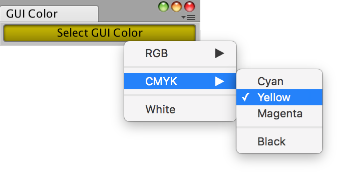

The example below opens an Editor window with a button. Clicking the button displays a context menu, which lets you change the color to apply to the GUI in the window. Copy the example's contents into a script called GenericMenuExample.cs and put it into a folder in your project called Editor.
.
using UnityEngine;
using UnityEditor;
public class GenericMenuExample : EditorWindow
{
// open the window from the menu item Example -> GUI Color
[MenuItem("Example/GUI Color")]
static void Init()
{
EditorWindow window = GetWindow<GenericMenuExample>();
window.position = new Rect(50f, 50f, 200f, 24f);
window.Show();
}
// serialize field on window so its value will be saved when Unity recompiles
[SerializeField]
Color m_Color = Color.white;
void OnEnable()
{
titleContent = new GUIContent("GUI Color");
}
// a method to simplify adding menu items
void AddMenuItemForColor(GenericMenu menu, string menuPath, Color color)
{
// the menu item is marked as selected if it matches the current value of m_Color
menu.AddItem(new GUIContent(menuPath), m_Color.Equals(color), OnColorSelected, color);
}
// the GenericMenu.MenuFunction2 event handler for when a menu item is selected
void OnColorSelected(object color)
{
m_Color = (Color)color;
}
void OnGUI()
{
// set the GUI to use the color stored in m_Color
GUI.color = m_Color;
// display the GenericMenu when pressing a button
if (GUILayout.Button("Select GUI Color"))
{
// create the menu and add items to it
GenericMenu menu = new GenericMenu();
// forward slashes nest menu items under submenus
AddMenuItemForColor(menu, "RGB/Red", Color.red);
AddMenuItemForColor(menu, "RGB/Green", Color.green);
AddMenuItemForColor(menu, "RGB/Blue", Color.blue);
// an empty string will create a separator at the top level
menu.AddSeparator("");
AddMenuItemForColor(menu, "CMYK/Cyan", Color.cyan);
AddMenuItemForColor(menu, "CMYK/Yellow", Color.yellow);
AddMenuItemForColor(menu, "CMYK/Magenta", Color.magenta);
// a trailing slash will nest a separator in a submenu
menu.AddSeparator("CMYK/");
AddMenuItemForColor(menu, "CMYK/Black", Color.black);
menu.AddSeparator("");
AddMenuItemForColor(menu, "White", Color.white);
// display the menu
menu.ShowAsContext();
}
}
}